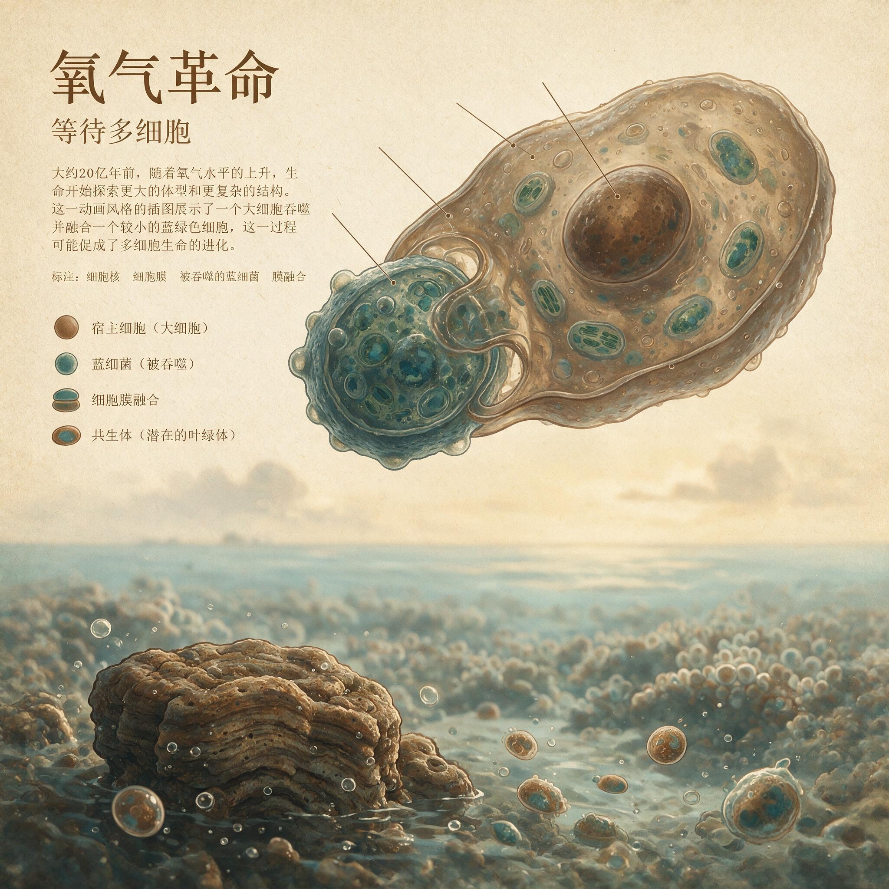

第 6 章
等待多细胞
拥有线粒体这一高效引擎，并不意味着复杂生命会立刻登场。这是一个必须在一开始就说清楚的判断，因为它直接挑战我们对演化逻辑的直觉理解。既然真核细胞已经通过内共生获得了线粒体——一台能在

有氧条件下将单分子葡萄糖转化为三十多分子ATP的高效引擎——那么按照顺畅的叙事，生命应该立刻释放被压抑的潜力，体型变大、结构变复杂、行为变主动。
但地球的历史断然拒绝了这种顺畅。从第一个携带着线粒体的真核细胞在古元古代末期的海洋中诞生，到多细胞生物真正在地层中留下清晰的化石印记，中间横亘着一段令人窒息的漫长沉默——超过十亿年。古生物学家给这段时间起了一个坦率到近乎刻薄的名字：“无聊的十亿年”（the Boring Billion）。
十亿年是什么概念？地球诞生于四十六亿年前。如果你把整段行星史压缩成一条手臂的长度，从指尖到肩膀代表全部岁月，那么无聊的十亿年占据的是从上臂中段到前臂中段的整段距离。
在这段几乎静止的时间里，地球的大气化学、海洋化学和气候系统陷入了一种顽固的稳定态，生命的演化似乎被按下了暂停键。真核细胞已经有了，线粒体已经在工作了，但复杂生命就是不出现。
为什么？答案不在引擎本身，而在引擎与燃料的失配。线粒体赋予真核细胞的是一份潜力，而非现实。有氧呼吸的生化通路确实可以在理想条件下榨取出惊人的能量——三十多分子ATP对两分子ATP，这是有氧呼吸与无氧发酵之间的十六倍效率差距。
但这个数字对比有一个容易被忽略的前提：有氧呼吸需要氧气。不是微量即可，不是偶尔供应就行，而是需要环境中存在持续、稳定、浓度足够的氧气作为呼吸链末端的最终电子受体。没有氧分子在那里耐心等待接收细胞色素c氧化酶传递过来的电子，整套精密的内膜机器——质子泵、电子传递链、ATP合酶——就只是一堆昂贵的蛋白质摆设。
质子梯度会崩溃，ATP合成会停转。细胞拥有法拉利引擎，但如果油箱里灌的是掺了百分之九十九水的劣质燃料，它连怠速运转都困难。
元古宙中期的地球，恰恰只能提供这种劣质燃料。大氧化事件在大约二十四亿年前永久性地改写了地球大气的化学属性。游离氧第一次被注入了这个此前几乎无氧的行星表面，条带状铁建造在全球海洋中大规模沉积，记录了溶解的铁离子与氧气相遇时发生的壮观化学反应。
但这绝不意味着氧气从此一路攀升到现代水平。地质记录讲述的是一个远为复杂、远为令人沮丧的故事。
在条带状铁建造终于停止沉积、大气氧含量第一次越过极低门槛之后，氧气曲线并没有继续上行。它停住了。在接下来的十亿年里，大气氧含量始终在低位徘徊，像一个卡住的恒温器。
现有的地球化学模型将这一时期的大气氧水平估算为现代大气水平（PAL）的1%到10%之间。即便取最乐观的上限——10%PAL——其绝对值也仅约2.1%。这相当于你今天在海拔五千米以上的稀薄空气中所能呼吸到的氧气浓度的十分之一。大多数估算倾向于将这个数字压得更低，落在1%到5%PAL的区间内，也就是0.2%到1%的绝对氧含量。这还不是最糟糕的部分。
海洋的状况比大气更为严酷。元古宙中期的海洋是一种分层结构极为鲜明的化学体系。表层海水因为与大气的接触以及蓝藻等光合生物的活动，维持着一层薄薄的氧化“皮肤”。但这层含氧层的厚度极其有限，其下是一个巨大的、黑暗的、化学性质截然不同的世界。
深海缺氧——这不是局部现象，不是某个封闭盆地的特殊情况，而是全球性的常态。
更糟的是，在许多时期，深海中不仅缺氧，还富含溶解的硫化氢——一种对绝大多数真核细胞而言剧毒的气体。地质学家通过在元古宙页岩中测量钼、铀等氧化还原敏感元素的同位素比值，清楚地重建了这一海洋化学结构。钼同位素的分馏信号表明，这一时期全球海洋中缺氧和硫化水域的面积远超今天，含氧的表层水和浅海沉积环境只占总体积的一小部分。
这构成了一个物理牢笼。真核细胞虽然拥有了线粒体引擎，但它们被锁在海洋的顶层薄膜之中。任何试图向深海扩展、试图占据更大生存空间的尝试，都会迎面撞上致命的硫化氢边界。
生命可用的三维空间，被严重压缩在一个近乎二维的表层世界里。在这种环境约束下，线粒体的能量优势在很大程度上是理论性的。当环境氧浓度极低时，细胞内氧分压随之下降，有氧呼吸的速率受到底物浓度的直接限制。
扩散进来的氧分子勉强能维持基础代谢——维持离子梯度、修复受损蛋白质、复制DNA——却无法支撑高能耗的生命活动。主动运动需要ATP驱动肌动蛋白丝滑行或鞭毛摆动，这消耗巨大。合成大量结构蛋白来构建细胞外基质、分泌多糖胶质将细胞黏合在一起，这同样需要能量。维持复杂的细胞间信号传导系统——受体、激酶、转录因子——每一个环节都在消耗ATP。在元古宙中期的低氧条件下，这些高能耗功能都被压制在最低水平。
真核细胞被困在一个尴尬的境地：引擎是好的，但油门踩不下去。这就引出了本章必须建立的核心概念：氧阈值。复杂多细胞生命的出现不是一个“是或否”的开关，而是一道需要跨过的物理门槛。
这道门槛由两个相互关联的因素共同设定：一是生物体通过有氧呼吸产生ATP的速率，二是氧气从环境扩散进入组织的速率。对于单细胞生物而言，扩散距离极短——氧气只需要穿过几微米的细胞膜和细胞质就能抵达线粒体。
但当多个细胞聚集在一起时，问题立刻尖锐起来。外层的细胞会率先消耗掉扩散进来的氧气，内层细胞面临的是一个急剧下降的氧浓度梯度。如果环境中的氧分压本来就很低，那么这个梯度将在非常浅的位置就降到零，使得多细胞结构的内部核心陷入缺氧坏死。
这不是一个可以通过演化逐步优化的软约束。这是一个由物理定律设定的硬边界。
菲克扩散定律冷酷地规定：在给定的环境氧浓度下，氧气能穿透的最大组织厚度是有限的。扩散速率与浓度梯度成正比，而浓度梯度受限于环境与组织内部之间的氧分压差。当环境氧分压极低时，这个压差很小，扩散驱动力微弱，氧气在组织内部的穿透深度就极浅。
对于元古宙中期那种仅相当于现代水平百分之几的大气氧含量，这个最大厚度极为苛刻——可能只有几十微米，也就是几层到十几层细胞的厚度。任何超过这个临界尺寸的多细胞聚集体，其内部细胞都会因为无法获得足够的氧气而窒息死亡。不是竞争不过别的生物，不是基因调控网络不够精巧，而是被物理定律直接否决。你可以在实验室里用基因工程手段制造出一个更大更厚的多细胞球，但它的内部细胞会在几分钟到几小时内开始死亡，与基因无关，与扩散有关。
理解了这一点，“无聊的十亿年”就不再是一个需要解释的反常现象，而是一个必然的物理结果。不是演化停滞了，而是演化的所有前进方向都被一道看不见但坚不可摧的物理天花板死死压住。
真核生物在这十亿年里并非无所作为——它们在低氧世界的边缘地带进行着艰苦的试错，在极其有限的形态空间里探索各种可能性。但这些探索始终无法突破那道由氧阈值设定的尺寸上限。化石记录为这种边缘试错提供了零星但珍贵的证据。
在元古宙中期的沉积岩中，古生物学家发现了一些丝状和扁平状的宏观化石，其中最引人注目的是卷曲藻（Grypania）和带状藻（Tawuia）。卷曲藻是一种螺旋状卷曲的丝状体化石，直径约一到两毫米，长度可达数厘米，形态像一根被卷起来的细面条。带状藻则呈现为扁平的带状或叶状形态，宽度在数毫米量级，厚度极薄。
这些化石的确切生物学归属至今仍有争议——有人认为是巨型细菌，有人认为是真核藻类，有人甚至认为可能是最早的多细胞动物近亲。但无论它们是什么，它们的形态本身就在讲述一个关于扩散限制的故事。
卷曲藻和带状藻采用了相同的形态策略来应对缺氧环境：极致地增加表面积与体积之比。丝状体将绝大多数细胞暴露在与海水直接接触的界面上，每个细胞距离外部含氧水体的扩散距离几乎为零，最大限度地缩短了氧气的传输路径。扁平的带状形态则通过将厚度控制在极薄的水平——通常只有几层细胞——来确保氧气能够穿透整个结构，不至于在内部形成缺氧死区。
这些是最原始的多细胞化尝试，是生命在低氧牢笼里所能找到的最优解。但它们不是通往更复杂形态的中间站。它们是死胡同。
在当时的大气氧水平下，丝状和扁平状几乎是唯一可行的宏观形态方案。你不能在丝状体的基础上逐渐加粗成管状，不能在扁平叶状体的基础上逐渐增厚成三维结构——任何向第三维度扩展的尝试都会立刻撞上扩散极限的墙。卷曲藻和带状藻在元古宙地层中出现了数亿年，形态几乎没有变化。不是它们不想变，而是物理定律不允许变。
有性生殖的出现是这段时期另一个关键演化创新，它同样需要在氧阈值的框架下被重新理解。真核生物的有性生殖涉及减数分裂和配子融合，这需要精确的细胞骨架重排、染色体分离和膜融合过程——这些都是高能耗事件。但更重要的是，有性生殖的真正演化意义在于它极大地加速了基因重组效率。无性生殖产生的后代在遗传上几乎是亲本的克隆，新突变的组合只能依靠连续积累，速度缓慢。
有性生殖则通过减数分裂时的同源重组和配子融合，将两个个体的遗传变异瞬间打乱重组，使得有益突变可以在种群中更快地组合和扩散。这在理论上为复杂适应提供了更丰富的遗传素材，是复杂多细胞生命演化的基础性工具。
然而，在无聊的十亿年里，有性生殖的出现并没有引发任何形态上的革命性突破。基因工具箱里的工具在缓慢积累——更复杂的细胞骨架蛋白、更精细的细胞周期调控机制、初步的细胞黏附分子——但制造大型复杂产品的指令始终缺少一个关键的外部条件：足够的环境氧气来支撑成品的运转。有性生殖可以产生无穷无尽的遗传变异，但如果所有变异方向中只有扁平和丝状形态是物理上可行的，那么自然选择就只能在扁平和丝状之间做微调。基因多样性再丰富，也突破不了扩散定律划定的禁区。
这里需要正面回应一种常见的反对意见。有学者认为，“无聊十亿年”的演化停滞不能完全归咎于氧气水平，基因调控网络的复杂性积累同样需要漫长的时间。
真核生物要演化出Hox基因这类控制身体蓝图的主控基因，要建立精确的细胞间信号传导通路——Wnt、Notch、Hedgehog等信号分子及其受体和下游转录因子——要协调数百个不同细胞类型的分化程序，这些都不是一蹴而就的工程。这个观点本身是正确的。基因调控网络确实需要漫长的试错和组装时间，复杂的发育程序不可能在几千万年内从零搭建完成。
但它忽略了一个逻辑优先性的问题：在没有足够氧气支撑大型多细胞结构生存的情况下，自然选择根本不会去筛选那些与大型多细胞结构相关的基因调控创新。一个需要数百个基因协同表达的复杂发育程序，如果其最终产品是一个会因为内部窒息而死去的不可行的多细胞体，那么构成这个程序的所有基因突变都不会被保留下来。它们甚至不会有机会被筛选，因为携带这些突变的胚胎在发育早期就会因为核心组织缺氧而解体。
氧气阈值设定了形态空间的可行边界，而基因调控网络只能在这个已经被划定的边界内部进行搜索。先有物理上的可行性，才有演化上的可选择性。
你可以花费十亿年积累基因调控的零件，但如果零件组装出的成品无法存活，积累就是徒劳的。
元古宙中期的地球就这样进入了一个奇怪的僵局。蓝藻和原始藻类在海洋表层持续进行光合作用，缓慢地向大气和表层海水释放氧气。但这个产氧速率太低了，低到刚好被风化作用、火山气体还原和有机质埋藏等耗氧过程所抵消。氧气曲线被锁定在一个狭窄的低值区间内，像一个卡住的恒温器，既上不去也不下来。
真核生物携带着它们昂贵的线粒体引擎，在含氧的表层水域和浅海边缘进行着各种小型化、扁平化、丝状化的演化实验。它们获得了有性生殖，获得了更复杂的细胞骨架，获得了初步的细胞黏附能力——但所有这些创新都像是被关在一个低矮笼子里的体操运动员，能做出的动作受限于天花板的高度。
这场持续十亿年的僵局最终是如何被打破的？答案指向了一个看似无关的事件：固氮能力的演化与真核藻类的辐射。氮是所有生命合成蛋白质和核酸所必需的元素，但在元古宙的大部分时间里，海洋中的生物可利用氮可能处于严重短缺状态。
固氮酶——将大气中的氮气还原为氨盐的关键酶——对氧气极其敏感。它的活性中心含有铁钼辅因子，一旦接触氧气就会不可逆地失活。
蓝藻虽然能通过异形胞等特化结构将固氮过程与光合产氧过程在空间或时间上分离，但这种分离机制的完善需要漫长的演化时间。当蓝藻最终演化出高效的固氮能力时，一把关键的锁被打开了。氮限制的解除意味着海洋初级生产力可以大幅提升，更多的有机碳被光合作用固定下来，更多的氧气作为副产品被释放到环境中。
真核藻类——绿藻和红藻——在新元古代早期发生了显著的演化辐射。这些原始质体生物（即含有叶绿体的真核藻类）具有比蓝藻更大的细胞体积和更复杂的细胞结构，能够更有效地进行光合作用。
更重要的是，它们作为真核生物，其沉降速率和有机碳埋藏效率与蓝藻不同，可能改变了全球碳循环的动力学。当这些藻类大量繁殖并死亡后，其有机残体沉降到深海缺氧区并被埋藏，不再被氧化分解，从而将净产氧留在大气和表层海洋中。
这就是所谓的“第二次大氧化事件”——一次发生在新元古代早期、将大气氧含量从十亿年僵局中推升出来的环境变革。地质记录捕捉到了这次转变的信号。在新元古代早期的页岩中，氧化还原敏感元素的同位素组成开始发生系统性变化。钼同位素比值指示深海缺氧区的范围开始收缩，含氧水域的占比扩大。硫同位素的非质量分馏信号——一种只有在极低氧大气中才会出现的地球化学指纹——逐渐减弱并最终消失。
这些化学证据共同指向一个结论：大约在八亿到七亿年前，地球的氧气曲线终于挣脱了那个困住它十亿年的低值平台区，开始向上攀升。攀升的具体幅度仍存在争议，不同地球化学模型给出的数值从10%PAL到40%PAL不等——也就是说，大气氧含量可能达到了约2%到8%。以绝对值来看，这仍然远低于今天的21%，但它已经跨越了一道关键门槛。
在这个新的氧水平下，扩散限制所允许的最大组织厚度显著增加了。几十微米的天花板被抬高到了数百微米甚至毫米量级。
多细胞结构不再被死死限制在扁平形态内，它们可以开始尝试真正的三维体形方案——球状、囊状、管状，这些此前被物理定律禁止的形态终于进入了演化的可行域。“无聊的十亿年”结束了。
但结束并不意味着繁荣立刻到来。线粒体引擎等待了十亿年才等到燃料支票的初步承兑，而这张支票的全部兑现还需要经历一场更为剧烈的行星级震荡。就在新元古代氧气攀升之后不久，地球将进入它历史上最极端的气候事件之一——雪球地球。整个行星将被冰层覆盖，从两极到赤道，海洋表面冻结成一面巨大的白色镜子，反射掉绝大部分阳光。
这场冰封灾难与氧气循环有着深刻的因果关联：氧气的积累消耗了大气中的温室气体甲烷，而新元古代早期罗迪尼亚超大陆的裂解又改变了全球风化速率和碳循环格局，多重因素叠加将气候系统推过了临界点。雪球地球将再一次重置地球的大气和海洋化学，并在其消融后为埃迪卡拉纪和寒武纪的生命爆发铺设最后的舞台。线粒体引擎已经就位超过十亿年了。
在这段漫长的沉默中，它一直在怠速运转，等待着燃料支票的承兑。现在，第一批足额的氧气正在注入大气和海洋，而一场即将到来的全球冰封将把这台引擎推向全功率运转的边缘。能量资格证已经签发太久太久了，它的有效期快要到了——而燃料支票即将到账。